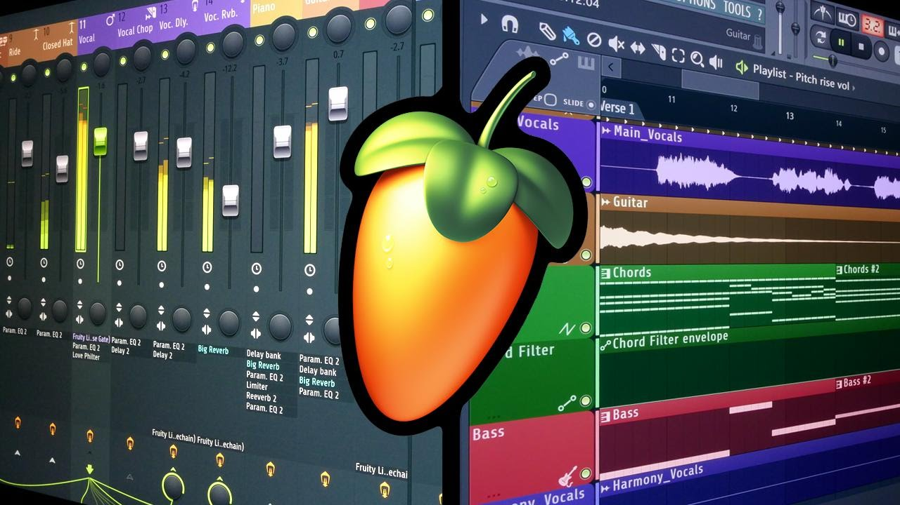
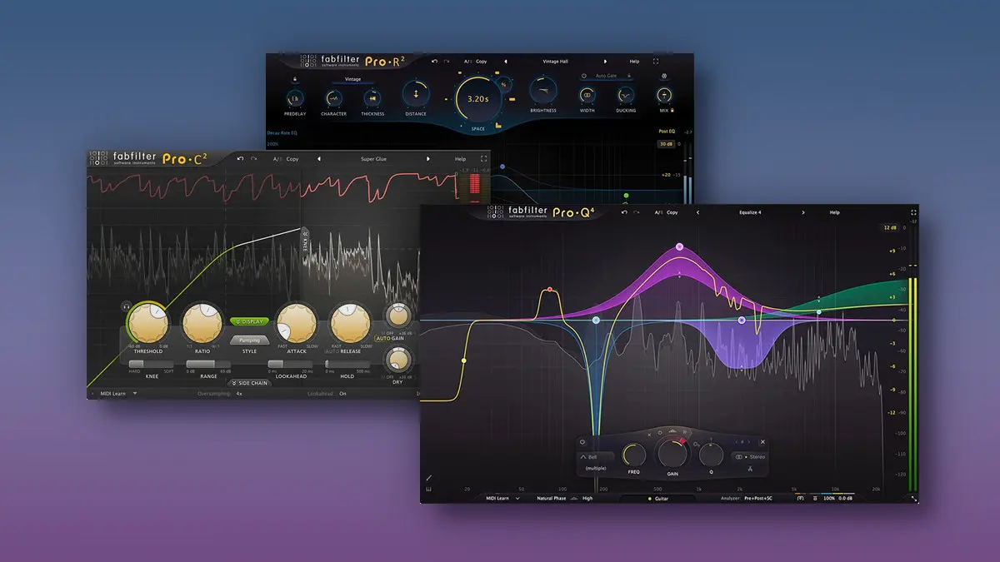
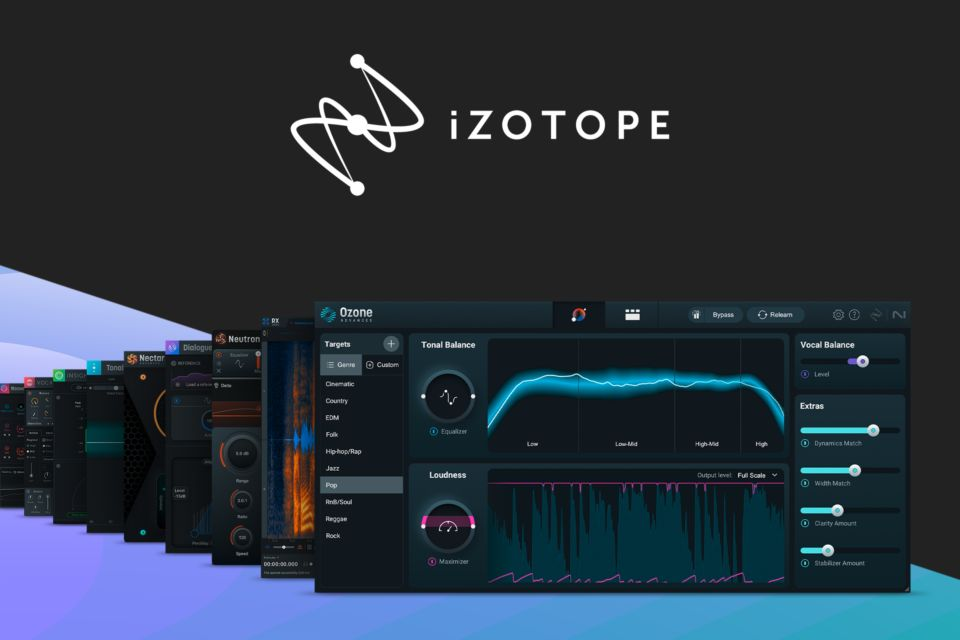

Informatique & Réseaux → Cybersécurité
Je suis Ryan ATROUN.
Étudiant en informatique et réseaux, en alternance chez Sestrea. Je me spécialise progressivement en cybersécurité et j’aime concevoir des interfaces futuristes, accessibles et performantes.
Projets en bref
• Jeux C++ (Puissance 4, mini Candy Crush)
• Projet base de données (SQL)
• Site web HTML/CSS (sur GitHub)
• Config d'un serveur Apache
• Bases de 1ʳᵉ année de BUT : C++, SQL, HTML/CSS/JS, Linux, Réseaux, Git
Musique (FL Studio)




Je compose et mixe sur FL Studio avec des plugins de mixage/mastering (FabFilter, iZotope…). Mon Spotify : écouter.